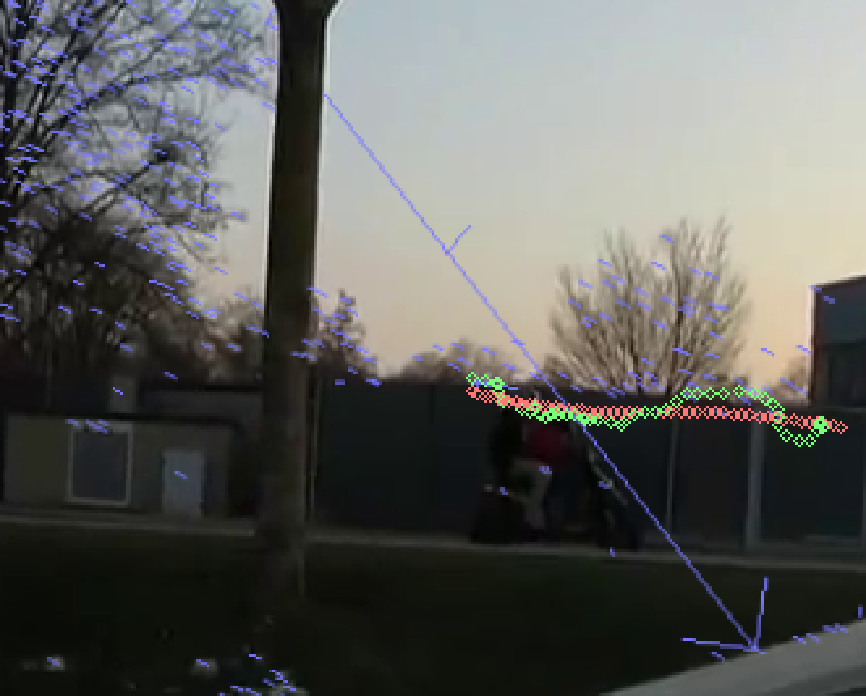

vstab
This is a simple video stabilizer developed on a week-end using OpenCV and Ceres available at Github. The idea came up because my friend who is editing our skatevideos complained about the post-processing stabilizer implemented in Adobe Premiere. It did not allow the camera to pan or move in any way. I thought this may be a good opportunity to get more familiar with OpenCV and implemented the following algorithm. I started off with a quick prototype in python to see if the idea may actually work out. For the non-linear LS optimization, I switched to C++ to be able to use the powerful Ceres library which I was already familiar with. Because OpenCV has interfaces for both language, this was no problem at all.
Pipeline
The following algorithm is implemented:
- Detect keypoints and descriptors with SIFT in each frame.
- Estimate homography transformation between two consecutive frames using RANSAC to find keypoint correspondencies. The transformation can be undone which ideally results in video of no camera motion.
- Smoothen camera motion by regressing a translation for each frame using non-linear Least Squares.
The following two costs are minimized in the process:
- Centered: The difference of the translation to the actual position of the frame estimated using the keypoint correspondencies.
- Smoothed: The difference in the steps from the translation of the previous frame and to the translation of the next frame.
- Apply the transformation from 2. and 3.
- Crop the frames to the largest rectangle with the original aspect ratio that always contains content.
In contrast to fitting a parametric model to the data such as a line or a polygon, this approach is able to smooth any camera trajectory. Moreover, having only a single parameter makes the program really easy to use.
This is shown in the screenshot:
- Blue: Correspondencies between keypoints of the current and the following frame (RANSAC is robust against outliers)
- Green: Original camera motion trajectory estimated from keypoint correspondences
- Red: Smoothed camera motion trajectory minimizing the cost functions (smoothness controlled by the smoothing factor)